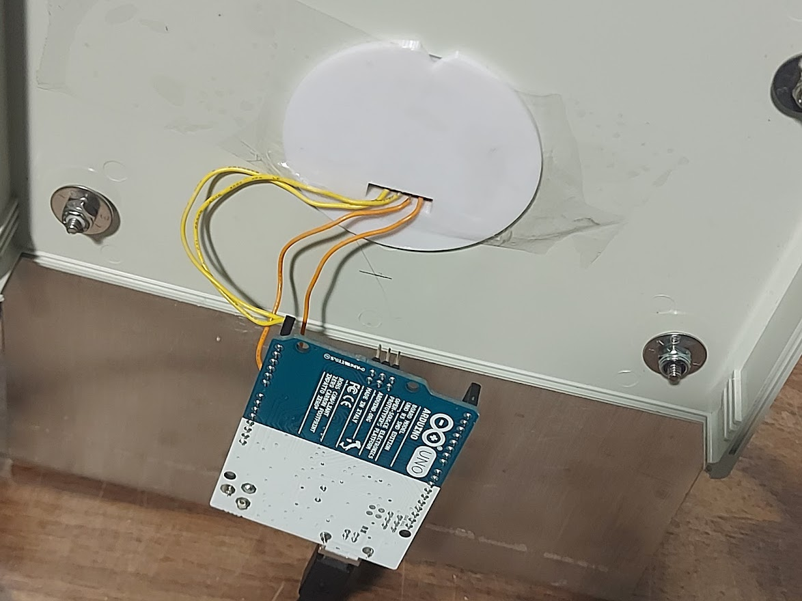
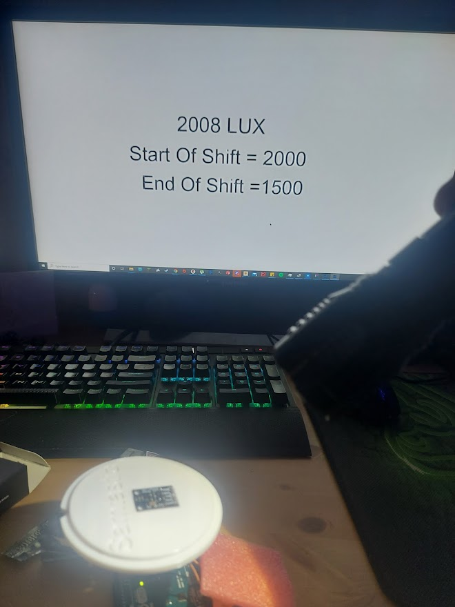

Projets LED

La base de mon support RGB en acrylique

De gauche à droite : mon support lumineux Spider-Man, Iron Man et le support en acrylique lumineux

Un "cœur d'arc" de cosplay

L'intérieur de la roue lumineuse

L'avant de la roue de médecine
Ordinateurs

Mon ordinateur personnel

Un ordinateur sur mesure pour gérer la surveillance et diverses opérations dans une entreprise locale.
Arduino

Ma graveuse sur bois Arduino basée sur CNC réalisée en tant que projet de fin d'études à l'université.

Luxmètre Arduino, partie 1

Luxmètre Arduino, partie 2